Örnek içerik — uzman onayı bekliyor. Kesim önerileri ana akım rehberlerin (AAP, NHS) genel ilkelerine göre hazırlanmış örneklerdir; çocuk doktoru / çocuk diyetisyeni onayından geçmeden yayına alınmaz.
Uzman onayı bekliyor Çocuk doktoru / çocuk diyetisyeni incelemesi henüz yapılmadı.
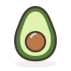
Avokado Meyve
Boğulma riski: Düşük
Hazırlık: Çiğ olarak; parmakla bastırınca iz kalan olgun avokado seçin.
6–8 ay Avuç kavrama
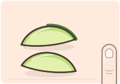
Boyut: Yetişkin parmağı boyunda kalın dilim
Kalın dilimler hâlinde ya da çatalla ezilmiş verin.
Dilimin bir kısmında kabuğu bırakmak kavramayı kolaylaştırır.
9–12 ay Kıskaç tutuşu
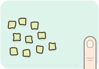
Boyut: Nohut büyüklüğünde (~1 cm)
Küçük küpler.
Kaygan küpleri yakalamak bebeğin el becerisini geliştirir.
12 ay + Isırma & çiğneme
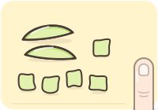
Boyut: Küçük lokma (~1,5 cm)
İnce dilim ya da lokmalık küp.
Ekmeğe sürülerek de sunulabilir.
Asla: Olgunlaşmamış sert avokado vermeyin.
Ezilme testi Parçayı başparmağınızla işaret parmağınız arasında hafifçe bastırın; kolayca eziliyorsa bebeğiniz için yeterince yumuşaktır.
Brokoli Sebze
Boğulma riski: Düşük
Hazırlık: Buharda ya da haşlayarak yumuşayana kadar pişirilir.
6–8 ay Avuç kavrama
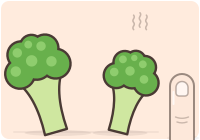
Boyut: Avuç içi büyüklüğünde çiçek
Sapı uzun bırakılmış büyük çiçekler; sap tutamak olur.
Sapı çatalla kolayca delinmeli.
9–12 ay Kıskaç tutuşu
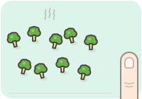
Boyut: Nohut-fındık büyüklüğünde (~1 cm)
Küçük çiçeklere ayırın.
Omlet ve pilavların içine de doğrayabilirsiniz.
12 ay + Isırma & çiğneme
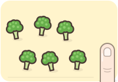
Boyut: Küçük lokma (~1,5–2 cm)
Yumuşak pişmiş, lokmalık küçük çiçekler; aile yemeğinden.
Çiğ brokoli için çocuğunuzun çiğneme becerisini gözetin.
Asla: Çiğ ya da yarı pişmiş sert brokoli parçaları vermeyin.
Ezilme testi Pişmiş parçayı başparmağınızla işaret parmağınız arasında hafifçe bastırın; kolayca eziliyorsa bebeğiniz için yeterince yumuşaktır.
Çilek Meyve
Boğulma riski: Orta
Hazırlık: Çiğ olarak; iyice yıkanmış.
6–8 ay Avuç kavrama
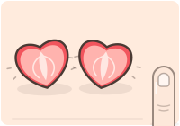
Boyut: Büyük çileğin yarısı, bastırılıp yassılaştırılmış
Büyük ve olgun çileği boyuna ikiye bölüp parmağınızla bastırarak yassılaştırın ya da çatalla ezin.
Küçük ve sert çilekleri mutlaka ezin.
9–12 ay Kıskaç tutuşu
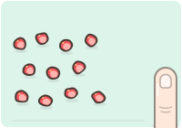
Boyut: Nohut büyüklüğünde (~1 cm)
Küçük parçalara kesin.
Yoğurdun üzerine ezerek de koyabilirsiniz.
12 ay + Isırma & çiğneme
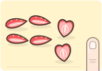
Boyut: Dörtte bir ya da ince dilim
Boyuna dörde bölün ya da ince dilimleyin.
Küçük çocuklarda bütün çilek yerine kesilmiş tercih edin.
Asla: Küçük ve sert çileği bütün vermeyin.
Ezilme testi Parçayı başparmağınızla işaret parmağınız arasında hafifçe bastırın; kolayca eziliyorsa bebeğiniz için yeterince yumuşaktır.
Elma Meyve
Boğulma riski: Orta
Hazırlık: Çiğ elma serttir; pişirilir ya da ince rendelenir.
6–8 ay Avuç kavrama
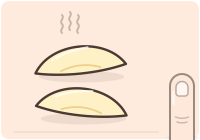
Boyut: Yetişkin parmağı boyunda yumuşak dilimler
Kabuğunu soyup dilimleri buharda ya da fırında yumuşatın; ya da püre yapın.
Çiğ verecekseniz yalnız ince rendelenmiş olarak.
9–12 ay Kıskaç tutuşu
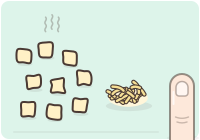
Boyut: Nohut büyüklüğünde (~1 cm)
Pişmiş küçük parçalar ya da ince rendelenmiş çiğ elma.
Rendelenmiş elmayı yoğurda karıştırabilirsiniz.
12 ay + Isırma & çiğneme
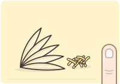
Boyut: Kâğıt inceliğinde dilimler
Kabuğu soyulmuş çiğ elmayı kâğıt inceliğinde dilimleyin ya da ince rendeleyin; pişmiş elmayı küçük parçalar hâlinde verebilirsiniz.
Kalın çiğ dilimler ve kabuk parçaları boğazda takılabilir.
Asla: Kalın çiğ elma dilimi ya da sert elma parçası vermeyin.
Ezilme testi Pişmiş parçayı başparmağınızla işaret parmağınız arasında hafifçe bastırın; kolayca eziliyorsa bebeğiniz için yeterince yumuşaktır.
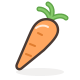
Havuç Sebze
Boğulma riski: Yüksek
Hazırlık: Çiğ havuç serttir; bebeklere yumuşayana kadar pişirilmiş olarak verilir.
6–8 ay Avuç kavrama
Boyut: Yetişkin parmağı boyunda ve kalınlığında
Buharda ya da haşlayarak tamamen yumuşatın, kalın çubuklar hâlinde verin.
Ezilme testinden geçmeli: parmaklarınız arasında kolayca ezilmeli.
9–12 ay Kıskaç tutuşu
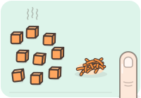
Boyut: Nohut büyüklüğünde (~1 cm) küpler
Pişmiş havucu küçük, yumuşak küplere kesin ya da çiğ havucu ince rendeleyin.
Kıskaç tutuşunu çalıştırmak için tabağa birkaç küp koyun.
12 ay + Isırma & çiğneme
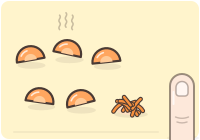
Boyut: İnce yarım ay dilim (~2 cm), küçük lokma
Pişmiş havucu ince yarım ay dilimlere ya da küçük parçalara kesin; çiğ verecekseniz ince rendeleyin.
Çiğ havuç çubuğu ve halka dilimleri 4 yaşına kadar boğulma riski taşır.
Asla: Çiğ havuç çubuğu, sert havuç halkası ya da yarı pişmiş parçalar vermeyin.
Ezilme testi Pişmiş parçayı başparmağınızla işaret parmağınız arasında hafifçe bastırın; kolayca eziliyorsa bebeğiniz için yeterince yumuşaktır.
Karpuz Meyve
Boğulma riski: Düşük
Hazırlık: Çiğ olarak; çekirdekleri ayıklanır.
6–8 ay Avuç kavrama
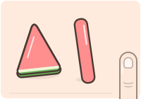
Boyut: Yetişkin parmağı boyunda
Çekirdeksiz, parmak boyunda çubuklar ya da kabuğa yakın üçgen dilimler.
Kabuk kısmı tutamak olarak işe yarar ama bebeğin kabuğu kemirmesine izin vermeyin.
9–12 ay Kıskaç tutuşu
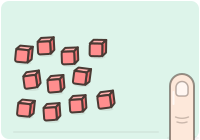
Boyut: Nohut-fındık büyüklüğünde (~1 cm)
Çekirdeksiz küçük parçalar.
Suludur; önlük işe yarar.
12 ay + Isırma & çiğneme
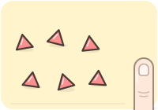
Boyut: Küçük lokma (~1,5 cm)
Çekirdeksiz, kabuksuz küçük dilimler.
Siyah çekirdekleri ayıklamaya devam edin.
Asla: Çekirdeklerini ayıklamadan vermeyin.
Ezilme testi Parçayı başparmağınızla işaret parmağınız arasında hafifçe bastırın; kolayca eziliyorsa bebeğiniz için yeterince yumuşaktır.
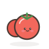
Kiraz domates Sebze
Boğulma riski: Yüksek
Hazırlık: Çiğ ya da fırında pişmiş; pişirmek kabuğu yumuşatır.
6–8 ay Avuç kavrama
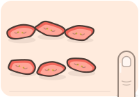
Boyut: Boyuna dörtte bir, bastırılıp yassılaştırılmış
Boyuna dörde bölün ve bastırarak yassılaştırın.
Kabuğu sert gelirse kısa süre fırınlayın.
9–12 ay Kıskaç tutuşu
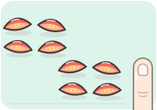
Boyut: Boyuna dörtte bir
Boyuna dörde bölün.
Salata ve makarnaya eklemeden önce de dörde bölün.
12 ay + Isırma & çiğneme
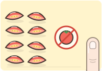
Boyut: Boyuna dörtte bir
Boyuna dörde bölmeye devam edin.
4 yaşına kadar bütün verilmez.
Köfte (kıyma) Protein
Boğulma riski: Orta
Hazırlık: İçi pembe kalmayacak şekilde tamamen pişirilir; fırında ya da sulu pişirme yumuşak tutar.
6–8 ay Avuç kavrama
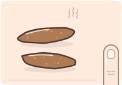
Boyut: Yetişkin parmağı boyunda
Parmak boyunda, yassı ve oval yumuşak köfteler yapın ya da kıymayı sebze püresine karıştırın.
Rendelenmiş sebze eklemek köfteyi nemli tutar.
9–12 ay Kıskaç tutuşu
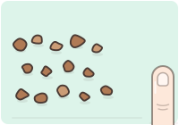
Boyut: Nohut büyüklüğünde (~1 cm) parçalar
Köfteyi küçük parçalara bölün ya da ufalayın.
Sert, kuru kenarları ayıklayın.
12 ay + Isırma & çiğneme
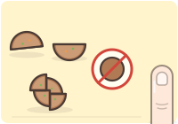
Boyut: Küçük lokmalık
Küçük köfteleri ikiye ya da dörde bölün.
Top şeklinde bütün köfte yerine bölünmüş köfte verin.
Asla: İçi pembe, sert ya da kuru köfte ve bütün yuvarlak köfte vermeyin.
Ezilme testi Pişmiş parçayı başparmağınızla işaret parmağınız arasında hafifçe bastırın; kolayca eziliyorsa bebeğiniz için yeterince yumuşaktır.
Makarna Tahıl
Boğulma riski: Düşük
Hazırlık: Paketteki süreden biraz uzun, tamamen yumuşayana kadar haşlanır; tuz eklenmez.
6–8 ay Avuç kavrama
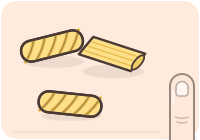
Boyut: Bebek yumruğundan taşan büyük şekiller
Burgu, kalem gibi bebeğin kavrayabileceği büyük şekiller seçin; ya da küçük makarnayı ezin.
Sosla kaplamak kavramayı kolaylaştırır.
9–12 ay Kıskaç tutuşu
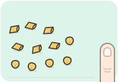
Boyut: Küçük lokma (~1 cm)
Küçük deniz kabuğu gibi kısa makarnalar ya da küçük parçalara kesilmiş kalem makarna.
Arpa şehriye ve küçük makarnalar kaşıkla yeme pratiği sağlar.
12 ay + Isırma & çiğneme
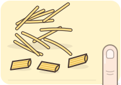
Boyut: Kısa parçalar (~3–4 cm)
Aile porsiyonundan; uzun makarnayı kısa parçalara kesin.
Fırın makarnanın kurumuş sert kenarlarını ayıklayın.
Asla: Az pişmiş, sert (al dente) makarna vermeyin.
Ezilme testi Parçayı başparmağınızla işaret parmağınız arasında hafifçe bastırın; kolayca eziliyorsa bebeğiniz için yeterince yumuşaktır.
Muz Meyve
Boğulma riski: Düşük
Hazırlık: Çiğ olarak; olgun ve yumuşak olanı seçin.
6–8 ay Avuç kavrama
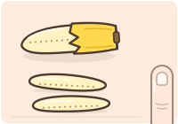
Boyut: Yetişkin parmağı boyunda
Muzu ikiye bölüp kabuğunun bir kısmını tutamak olarak bırakın ya da boyuna üçe ayırın.
Kaygan gelirse dış yüzeyini ince öğütülmüş yulafla kaplayın.
9–12 ay Kıskaç tutuşu
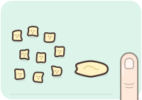
Boyut: Nohut büyüklüğünde (~1 cm)
Küçük parçalara kesin ya da ezin.
Kıskaç tutuşunu çalıştırır.
12 ay + Isırma & çiğneme
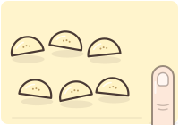
Boyut: Küçük lokmalık yarım ay dilimler
Boyuna ikiye bölüp yarım ay dilimleyin.
Ağzını doldurmadan küçük ısırıklar almaya teşvik edin.
Asla: Olgunlaşmamış sert muz vermeyin; ağzına birden çok parça doldurmasına izin vermeyin.
Ezilme testi Parçayı başparmağınızla işaret parmağınız arasında hafifçe bastırın; kolayca eziliyorsa bebeğiniz için yeterince yumuşaktır.
Hazırlık: Yalnız pastörize sütten yapılmış peynirler; beyaz peynirin tuzu suda bekletilerek azaltılır.
6–8 ay Avuç kavrama
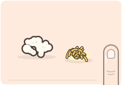
Boyut: Rendelenmiş
Lor peyniri ya da rendelenmiş kaşar; yemeğe karıştırılmış ya da eritilmiş.
Tuzlu peynirleri az kullanın; lor daha az tuzludur.
9–12 ay Kıskaç tutuşu
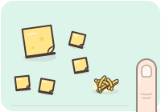
Boyut: İnce dilim, küçük parça (~1 cm)
İnce dilimler ya da küçük ince parçalar; rendelenmiş de olur.
Eritilmiş peynir omlet ve makarnada iyi bağlayıcıdır.
12 ay + Isırma & çiğneme
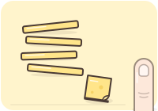
Boyut: İnce çubuk ya da ince dilim
İnce dilim ya da ince çubuklar.
Sert peyniri iri küp yerine ince dilim olarak verin.
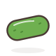
Salatalık Sebze
Boğulma riski: Orta
Hazırlık: Çiğ olarak; kabuğu soyulur.
6–8 ay Avuç kavrama
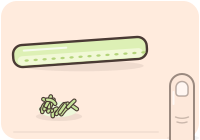
Boyut: Yetişkin parmağından uzun (~9–10 cm), kalın çubuk
Kabuğunu soyup ısırarak koparamayacağı kadar uzun ve kalın çubuklar hâlinde ya da ince rendelenmiş verin.
Çubuktan parça koparırsa ince rendelenmiş hâle geçin.
9–12 ay Kıskaç tutuşu
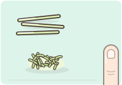
Boyut: Kibrit çöpü inceliğinde şerit ya da rende
İnce rendelenmiş ya da çok ince şeritler.
Yoğurtla karıştırıp cacık gibi sunabilirsiniz (tuzsuz).
12 ay + Isırma & çiğneme
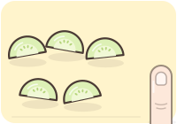
Boyut: İnce yarım ay dilimler
Kabuksuz ince yarım ay dilimler.
Kalın yuvarlak dilimler yerine yarım ay tercih edin.
Tavuk Protein
Boğulma riski: Orta
Hazırlık: Ortası tamamen beyazlayana kadar pişirilir; nemli kalması için haşlama ya da sulu pişirme tercih edilir.
6–8 ay Avuç kavrama
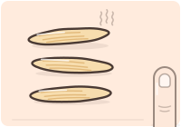
Boyut: Yetişkin parmağı boyunda şerit
Püre yapın ya da lif yönünde, parmak boyunda nemli şeritler kesin.
Bebek şeridi emer ve kemirir; küçük parça koparırsa didiklenmiş hâle geçin.
9–12 ay Kıskaç tutuşu
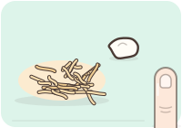
Boyut: İnce lifler, küçük parçalar
İnce didikleyin ve sosla ya da yoğurtla nemlendirin.
But eti göğüsten daha yumuşak ve nemlidir.
12 ay + Isırma & çiğneme
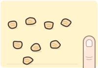
Boyut: Küçük lokma (~1,5 cm)
Küçük ve ince parçalar; sosla nemli tutun.
Kuru ve iri parçalar boğazda takılabilir; yanında sos ya da çorba olsun.
Üzüm Meyve
Boğulma riski: Yüksek
Hazırlık: Çiğ olarak; yıkanmış ve çekirdekli ise çekirdeği çıkarılmış.
6–8 ay Avuç kavrama
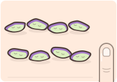
Boyut: Boyuna dörtte bir, bastırılıp yassılaştırılmış
Boyuna dörde bölün ve parmağınızla bastırarak yassılaştırın.
Asla bütün ya da enine ikiye kesilmiş vermeyin.
9–12 ay Kıskaç tutuşu
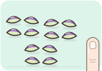
Boyut: Boyuna dörtte bir
Boyuna dörde bölün.
Büyük üzümleri sekize bölebilirsiniz.
12 ay + Isırma & çiğneme
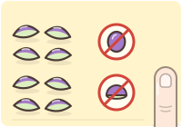
Boyut: Boyuna dörtte bir
Boyuna dörde bölmeye devam edin.
4 yaşına kadar bütün ya da yalnız ikiye bölünmüş üzüm vermeyin.
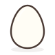
Yumurta Protein
Boğulma riski: Düşük
Hazırlık: Sarısı ve beyazı tamamen katılaşana kadar pişirilir.
6–8 ay Avuç kavrama
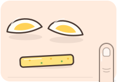
Boyut: Dörtte bir ya da parmak şeridi
Haşlanmış yumurtayı boyuna dörde bölün ya da ezin; omleti parmak şeritlerine kesin.
Kuru sarıyı biraz anne sütü ya da suyla nemlendirin.
9–12 ay Kıskaç tutuşu
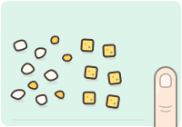
Boyut: Nohut büyüklüğünde (~1 cm)
Doğranmış haşlanmış yumurta ya da küçük omlet kareleri.
Sebzeli omlet hem alerjen tanıtımı hem sebze için iyi bir yoldur.
12 ay + Isırma & çiğneme
Boyut: Dilim ya da küçük lokma (~1,5 cm)
Haşlanmış yumurta dilimleri, küçük parçalar ya da omlet.
Haşlanmış yumurtayı bütün vermek yerine dilimleyin.
Asla: Az pişmiş, sarısı akan yumurta vermeyin.
Ezilme testi Pişmiş parçayı başparmağınızla işaret parmağınız arasında hafifçe bastırın; kolayca eziliyorsa bebeğiniz için yeterince yumuşaktır.